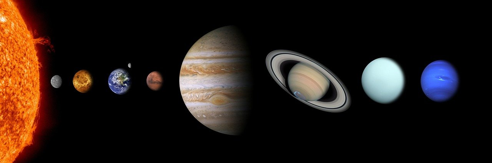
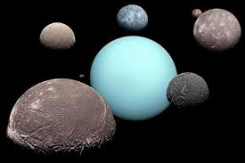

STORIA:
Nel 1781 è stato scoperto il pianeta che conosciamo: Urano. Quando John Flamsteed osservò per la prima volta Urano, pensava che si trattasse di una stella della costellazione del toro. Tutti pensavano che fosse una stella, fin quando nel 1781 l'astronomo William Herschel scoprì che in realtà si trattava di un pianeta. Nel 1986 il pianeta è stato esplorato per la prima volta con Voyager 2, ovvero una sonda spaziale che ha esplorato anche Saturno, Giove e Nettuno.

URANO NEL SS:
Urano è il settimo pianeta nel Sistema Solare e dista dal Sole circa 2,9 miliardi di kilometri. E' compreso tra Nettuno e Saturno ed è grande circa 4 volte la Terra. Urano ha un moto di rotazione opposto rispetto a quello della Terra e ruota intorno a un asse che è quasi sul piano dell'orbita.
CARATTERISTICHE:
